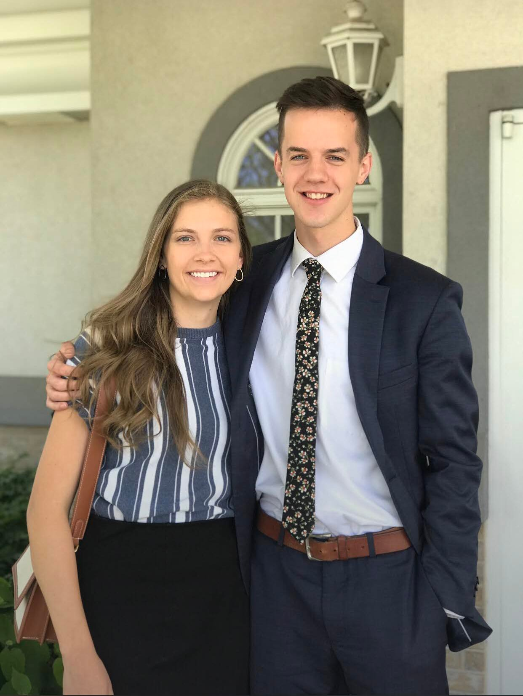
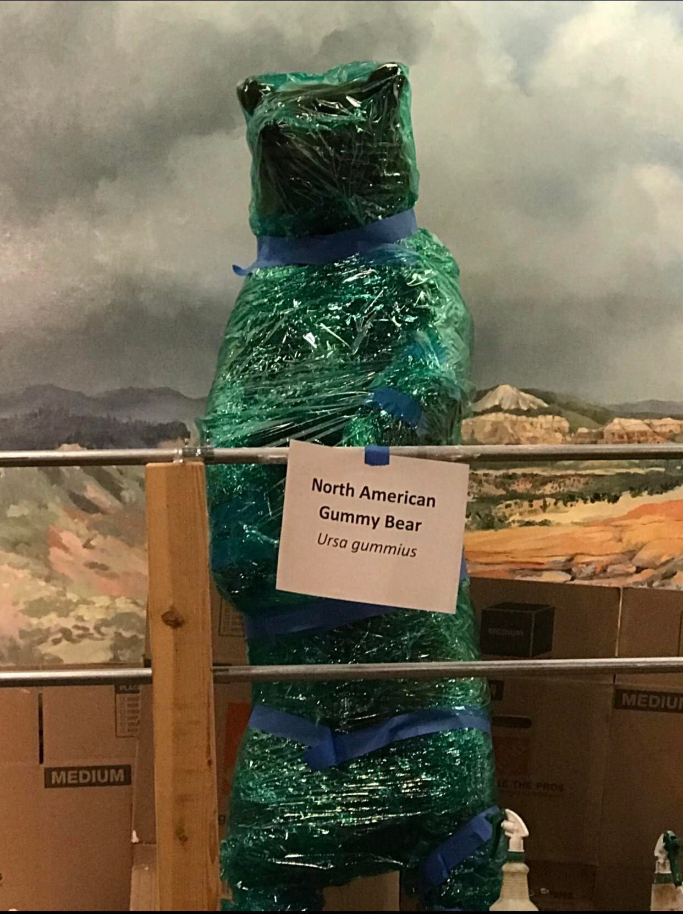

I was born in Halifax, Canada, on January 5th, 2000. I moved to Ontario when I was 16, and when I was 18 I served a 2 year mission in Provo, Utah and surrounding areas. I attended BYU-Idaho from April 2021 to December 2021, and I transferred to BYU in January 2022 and am currently studying pre-business there.
On April 9th, 2021, I met the girl who I would soon realize is the one I want to spend my life with. When we met, it was through my older sister, Claire, who trained Emmy on their missions in Bulgaria; Emmy lived in Provo and was studying at BYU and so I would drive down to Provo every weekend with my friend, Chris, and we'd stay at Claire and her husband Alex's place. I went on dates with Emmy and hung out with her a lot and we dated long-distance for 7 months until I moved to Provo in January. We'll be getting married in August, and I couldn't be more excited about it. Here's a picture of us!

One of the things I love about being a student at BYU is the atmosphere of the people who work here and their sense of humor, just look
at this picture I took in the Bean Museum, someone had a fun time wrapping up the displays!

check out
BYU's Homepage
for more good stuff!